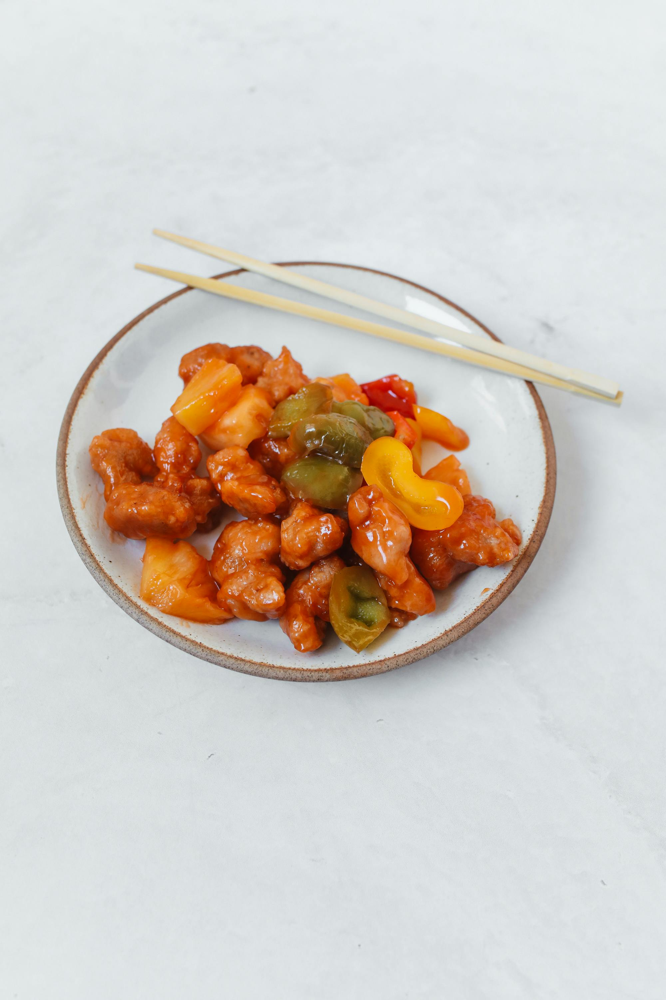

Sweet and Sour Chicken

Who doesn't love a classy sweet and sour chicken? This is very qick and simple and very comfort dish.
The only tricky part is that I'd better have a wok :)
Ingredients
Crispy chicken:
- 350g chicken breast
- 1 tsp of salt
- 1 tsp of sugar
- a pinch of black pepper
- 1 egg
- 3-4 tbsp of potato starch
Sweet and sour sauce:
- 5 tbsp of ketchup
- 2 tbsp of rice vinegar
- 2 tbsp of soy sauce
- 3 tsp of sugar
- pinch of MSG
- a splash of water
Add-ins:
- 3 tbsp of neutral oil
- 1/2 of onion
- 1/2 of red pepper
- 1/2 of green pepper
- 3 cloves of garlic
- 100g of fresh pineapple
Steps
- Cut chicken breast into, a nice one bite-sized pieces
- Mix starch, salt, black pepper, sugar and an egg togheter and add chicken,
make sure that it is fully coverd with the batter
- Mix all sauce ingrediens together and put it aside
- Cut all vegetables and pineapple into similar pieces
- Deepfry the chicken on a wok until it gets golden, put aside
- Add pressed garlic to the oil, then add all vegetables and the pineapple, fry it and stir it for about couple of minutes on a high heat
- Add your chicken back
- Add the souce and fry everything until the souce cover everything and gets a little bit thicker
- Serve with cooked rice